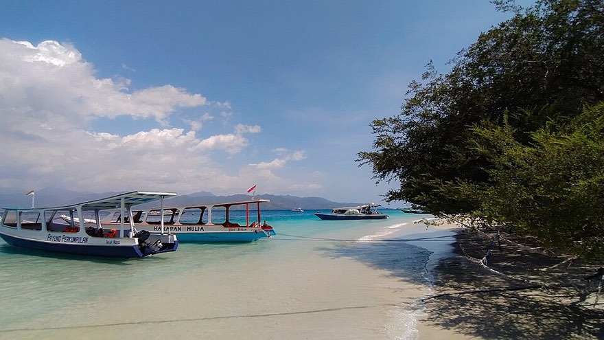
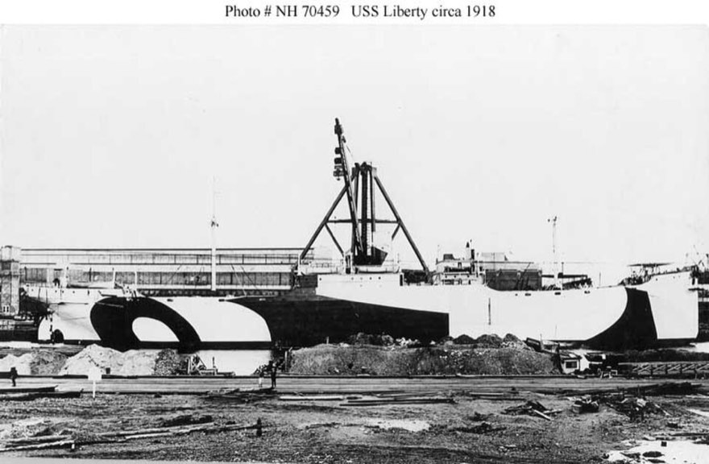
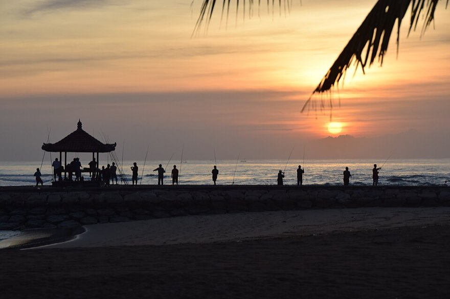
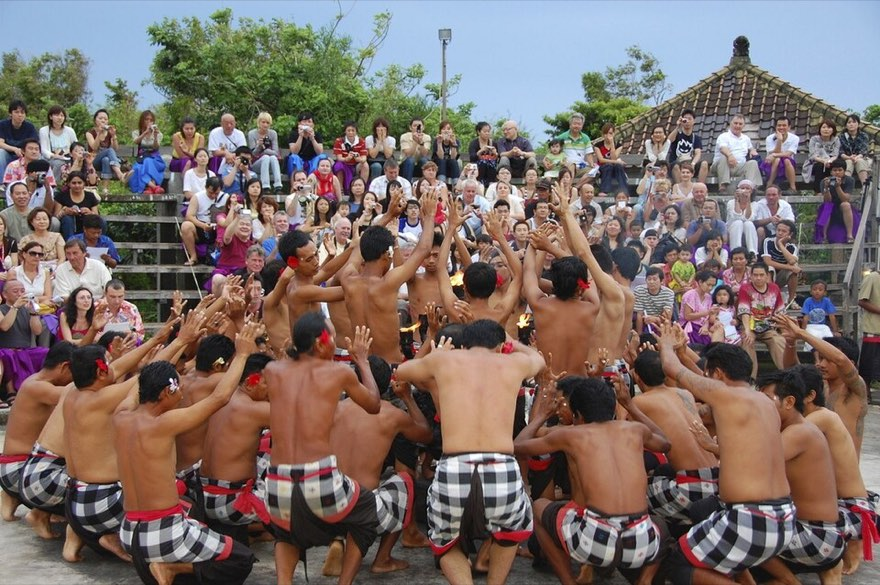
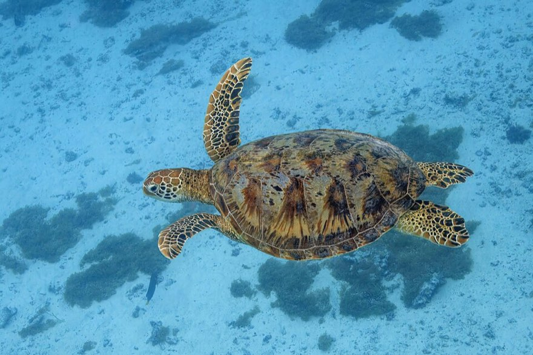
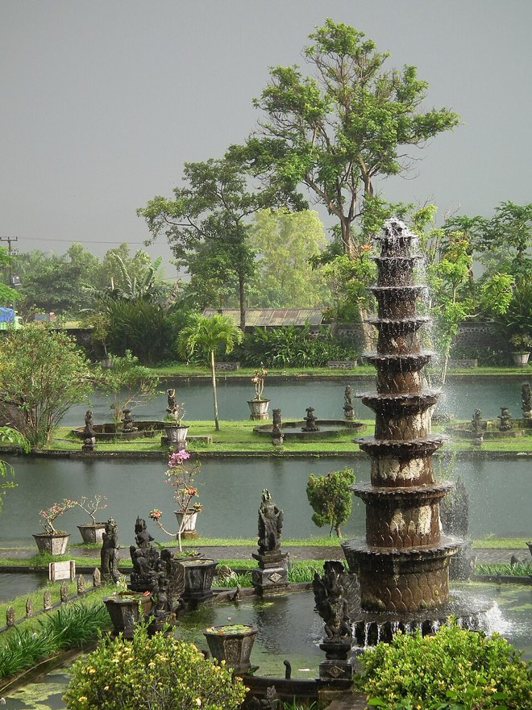
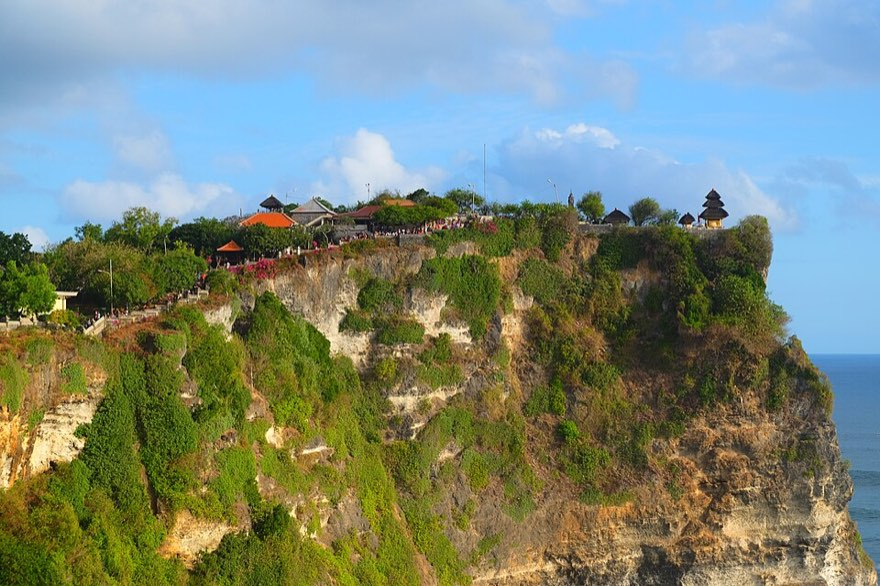
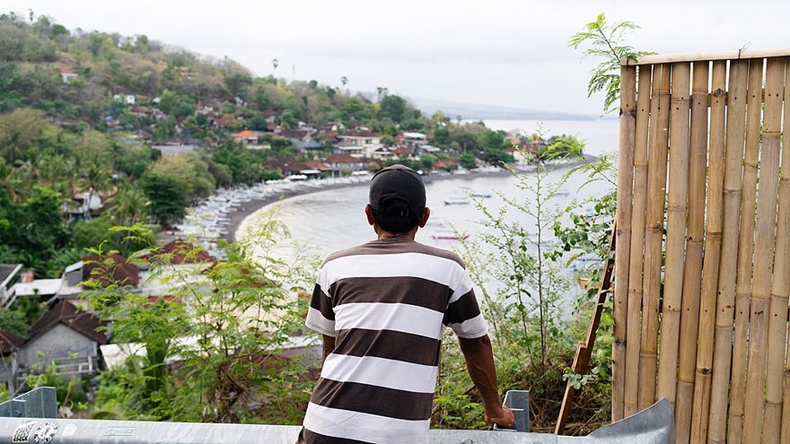
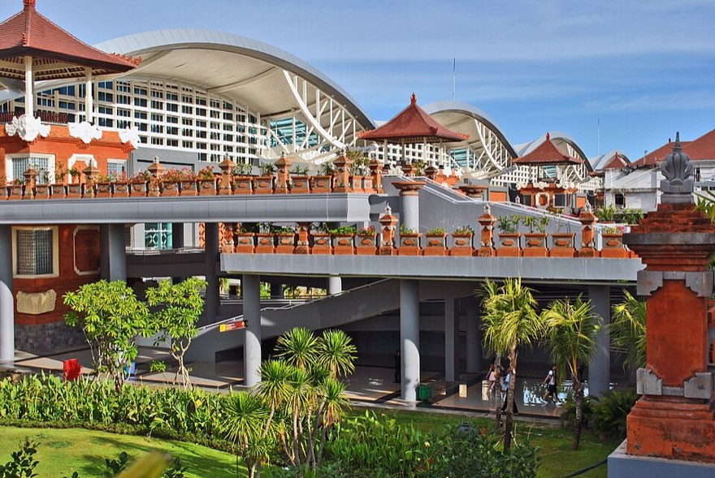

항공, 라구나, 공항 힐튼
말레이시아항공은 발권 완료. 라구나는 10/7부터 2박 킹 라군뷰, 힐튼 가든 인 공항은 10/9 1박이야.
우리 10주년 여행
길리 5박은 그대로 두고 에어 2박과 T 3박, 에어 3박과 T 2박을 함께 비교하고 있어. 두 일정 모두 9/28에 에어로 들어가 10/3에 T에서 나오고, 이후 아메드와 울루와뚜를 지나 라구나에서 마무리해.




옵션 A와 B는 가는 배와 나오는 배가 같아. 9/30에 T로 이동할지, 에어에서 하루 더 자고 10/1에 이동할지만 달라.
9/28 오후에 에어에 도착하고 9/29에는 동쪽 해변에서 스노클링해. 9/30에 T로 넘어가면 10/1은 자전거와 해변, 10/2는 2탱크 다이빙으로 나눌 수 있어. T에서 보내는 온전한 하루가 이틀이야.
9/29 스노클링 다음 날을 비워둘 수 있어. 9/30은 해변 카페와 수영장, 서쪽 일몰을 천천히 보고 10/1에 T로 이동해. T에서는 도착일 저녁과 10/2 다이빙을 보내게 돼.
에어와 T를 각각 2박 하고 10/2에 파당바이로 나오는 일정이야. USAT Liberty 외에 Amed Wall이나 Pyramids를 넣기 편하고, 해안도로를 보는 날도 따로 둘 수 있어. 돌아오는 배 날짜는 10/2로 맞춰야 해.
옵션 A와 B는 길리 안에서 숙박일만 바뀌고, 10/3부터는 같은 일정으로 이어져.
결제가 끝난 예약과 날짜를 정한 뒤 예약할 항목을 나눠 적었어.
말레이시아항공은 발권 완료. 라구나는 10/7부터 2박 킹 라군뷰, 힐튼 가든 인 공항은 10/9 1박이야.
옵션 A와 B 모두 9/28 누사두아 출발, 10/3 길리 T 출발이야. 숙소만 에어 2박과 T 3박, 또는 에어 3박과 T 2박으로 맞추면 돼.
아메드는 10/3부터 3박. 절벽 숙소는 10/6 1박. 다이빙과 기사는 무료취소 숙소를 잡은 뒤 예약해.
발권이 끝난 항공편이야. 첫 체크인 때 수하물 최종 도착지가 JHB인지 확인해.
| 날짜 | 구간 | 출발 | 도착 | 편명 |
|---|---|---|---|---|
| 9/24 목 | 청두 TFU → 쿠알라룸푸르 | 01:05 | 06:10 | MH527 |
| 쿠알라룸푸르 환승 | 11시간 55분 | |||
| 9/24 목 | 쿠알라룸푸르 → 조호르바루 | 18:05 | 19:05 | MH1057 |
| 9/27 일 | 조호르바루 → 쿠알라룸푸르 | 11:15 | 12:10 | MH1052 |
| 9/27 일 | 쿠알라룸푸르 → 발리 DPS | 15:10 | 18:30 | MH853 |
| 10/10 토 | 발리 DPS → 쿠알라룸푸르 | 13:05 | 16:00 | MH714 |
| 10/10 토 | 쿠알라룸푸르 → 청두 TFU | 19:00 | 10/11 00:05 | MH526 |
항공과 배, 다이빙처럼 시간이 정해진 일정만 고정했어. 나머지는 날씨와 컨디션에 맞춰 고르면 돼.
심야 비행이라 공항에 일찍 가서 바로 잘 준비만 하면 돼.
환승 시간이 길어서 시내에 다녀올 수 있어. 무리해서 많이 보지 말고 밥과 마사지 정도로 잡자.
여행 초반이라 힘을 아껴. 카페와 식사, 마사지 정도면 충분해.
하루가 길어. USS를 본 뒤 가든스 바이 더 베이와 Spectra까지만 지키고 나머지는 줄여도 돼.
사누르 대신 에카자야 선착장 가까운 딴중베노아로 가. 좋은 숙소보다 다음 날 이동이 편한 위치가 중요해.
이른 아침 딴중베노아에서 배를 타고 정오 무렵 길리 에어에 도착해. 이동 시간이 길어서 오후는 체크인과 점심, 낮잠에 쓰고 해가 질 때 서쪽 해변으로 나가면 좋아.

길리 바다Turtle Beach 쪽은 해변에서 바로 들어갈 수 있어. 조류와 수위를 확인한 뒤 오전에 한 번 들어가 거북이와 산호를 보고, 장비를 반납하면 늦은 아침을 먹어. 오후에는 숙소 수영장이나 마사지, 서쪽 해변 일몰 중에서 골라 보내면 돼.
에어 2박이면 이날 T로 이동하고, 에어 3박이면 섬에서 하루를 더 보내. 낮 시간은 이동과 체크인, 해변 휴식에 쓰는 일정이야.
옵션 A는 길리 T에서 하루를 온전히 쓸 수 있고, 옵션 B는 오전까지 에어에 머문 뒤 T로 이동해. 저녁부터는 같은 일정이야.
오전 두 번의 다이빙은 당일 조류를 보고 Shark Point나 Halik 중에서 정해. 보통 점심 무렵 끝나니 오후에는 장비를 정리하고 숙소에서 쉬기 좋아. 저녁은 해변 가까운 자리에서 길리 마지막 밤을 보내.
10시 배를 타면 파당바이에 정오쯤 도착해. 항구에서 기사와 만나 점심을 먹고 띠르따 강가를 둘러본 뒤 아메드로 이동하는 흐름이 자연스러워. 보트가 늦으면 정원 체류 시간을 줄이고 체크인 시간을 지키면 돼.

띠르따 강가뚤람벤 해변에서 입수하는 쇼어 다이빙이야. 아침 첫 타임에 난파선을 보고 수면 휴식과 아침 식사 뒤 Coral Garden으로 한 번 더 들어가. 점심 전에 두 번의 다이빙이 끝나서 오후에는 숙소에서 쉬거나 제멜룩 전망대에 다녀올 수 있어.
늦은 아침을 먹고 해안도로를 따라 작은 마을과 전망 좋은 카페를 둘러봐. 아메드 전통 제염장은 햇볕이 좋은 시간에 들르기 좋고, 오후에는 숙소에서 마사지받으며 다이빙 피로를 풀 수 있어.
아메드에서 남부까지 이동한 뒤 숙소에서 점심과 수영을 즐겨. 오후에는 멜라스티나 술루반 중 한 곳을 골라 다녀오고, 해가 지기 전 숙소로 돌아와 절벽 일몰을 보는 일정이야.

울루와뚜절벽 숙소에서 늦게 아침을 먹고 누사두아로 이동해. 15시에 체크인한 뒤 라군 풀과 해변 바를 둘러보고, 저녁은 리조트 안이나 발리 컬렉션에서 고를 수 있어.
이날이 여행의 중심이야. 리조트 밖으로 나가지 말고 늦은 조식부터 저녁까지 천천히 보내.
라구나 레이트 체크아웃 후 한 방향으로 움직여. 기사가 짐을 싣고 따라오는 일정이 편해.
공항 앞에서 자니까 아침에 서두를 필요가 없어.
00:05 TFU 도착. 심야라 택시나 디디로 들어가.
라구나와 힐튼은 예약 완료. 나머지는 아래 날짜와 무료취소 마감을 함께 확인하면 돼.

제멜룩 만 도보권을 우선해. 리버티 다이빙과 해안도로를 하기 편한 위치가 좋아.
La Joya Biu Biu, Mu Bali, Suarga처럼 수영장과 일몰을 함께 즐길 수 있는 곳이 잘 맞아.
킹 라군뷰 예약 완료. 10/8은 라군 풀과 해변, 스파와 기념 저녁을 리조트 안에서 보내.

15,000포인트 예약 완료. 다음 날 13:05 비행을 편하게 타기 위한 숙소야.
무료 귀환표를 쓰려면 에카자야 공식 홈페이지에서 누사두아 출발 편도를 먼저 사야 해.
금요일, 월초 플래시세일, 메가 프라이데이 할인으로 결제하면 무료 귀환 대상에서 빠져.
옵션 A와 B는 이 날짜를 써. 예약 메일의 배너로 14일 안에 신청하고, 옵션 C는 10/2 귀환표로 바꿔야 해. 무료표는 발권 뒤 날짜와 시간을 변경할 수 없어.
예약이 끝난 뒤 다시 볼 내용만 남겼어.
에카자야는 1인 최대 2개, 합산 25kg이야. 길리 에어와 T에서는 큰 짐을 선원이나 포터에게 맡기고 귀중품은 직접 들어.
누사두아에서 출항하기 전에 2인 생활비를 준비해. 길리와 아메드는 카드가 안 되는 곳이 많고 섬 ATM은 현금이 떨어질 때가 있어.
인도네시아 e-VOA, 발리 관광세, All Indonesia 세관 QR을 출발 전에 저장해. 말레이시아 MDAC와 싱가포르 SGAC도 날짜에 맞춰 제출해.
여행자보험에 스쿠버다이빙과 후송 담보가 있는지 확인해. 마지막 다이빙은 10/4라서 10/10 비행까지 여유가 있어.
라구나에 미리 기념 여행이라고 알려. 킹베드, 작은 어메니티, 10/9 레이트 체크아웃을 함께 요청해두자.
배와 섬 이동 시간은 출발 2주 전, 현지에서는 하루 전에 다시 확인해. 바람과 항만 사정으로 바뀔 수 있어.